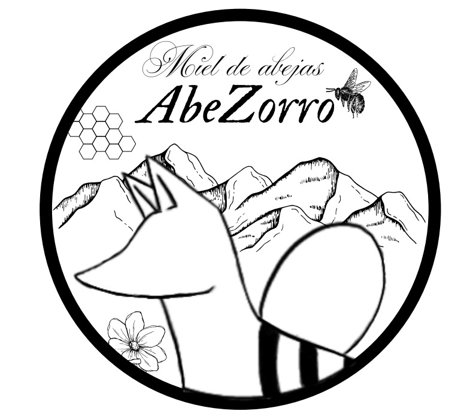

Nuestra historia
Antes del nombre,
estuvo el territorio.
Un monte altoandino. Una abeja. Un zorro. Y un pacto que lo cambió todo.
El origen
El monte que enseña a esperar
En el monte altoandino, donde el frío guarda la flor y el silencio enseña a esperar, la abeja trabajaba sin ser vista. Transformaba el néctar con paciencia antigua, siguiendo leyes que no necesitan palabras.
El zorro caminaba cerca. No buscaba la colmena. Observaba. Entendía que la vida se sostiene en el equilibrio: tomar solo cuando hay abundancia, cuidar incluso lo que no se posee. Por eso el zorro se volvió guardián, no dueño.
El pacto
Crear y proteger
AbeZorro nace de ese encuentro invisible. No es la abeja sola, ni el zorro solo, sino el pacto entre crear y proteger.
Cada cosecha respeta el ritmo del monte. Cada gota recuerda que la miel no es un producto, sino una consecuencia: del bosque vivo, de las abejas libres y de una decisión humana consciente.
"AbeZorro no nombra una marca, nombra un pacto: producir sin romper y cosechar sin dominar."
Acerca de nosotros
Un terreno, un propósito, diez años de visión
En 2021 llegamos a un terreno muy castigado por el paso del tiempo. Hoy, con técnicas pasivas, mucho aprendizaje y una enorme dosis de paciencia, lo estamos acompañando en su proceso de recuperación.
Buscamos que en 10 años sea una finca autosostenible, donde la conservación de la flora y fauna nativas sea el corazón del proyecto.
Nuestra miel
Poca cantidad. Mucha calidad.
Trabajamos con pocas colmenas en un bosque altoandino en Guachetá. No forzamos la producción, ni alimentamos artificialmente a las abejas. Cosechamos solo los excedentes. Por eso hay poca miel, pero de mucha calidad.
100%
Natural
0
Alimentación artificial
2021
Inicio del proyecto